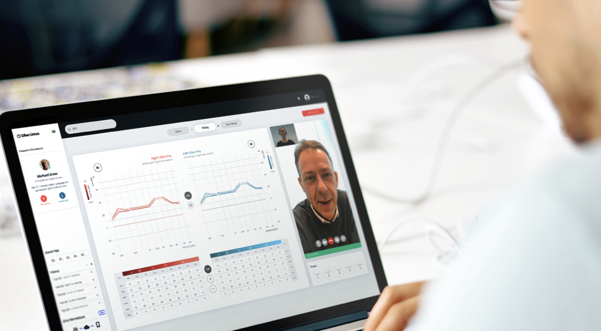
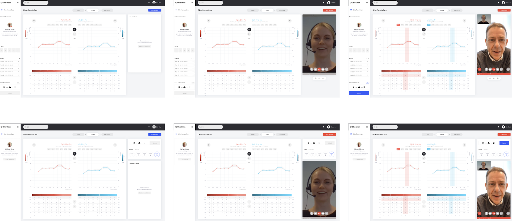
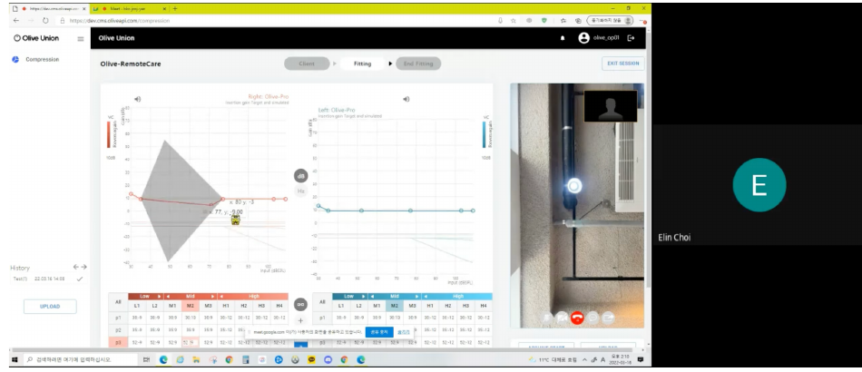
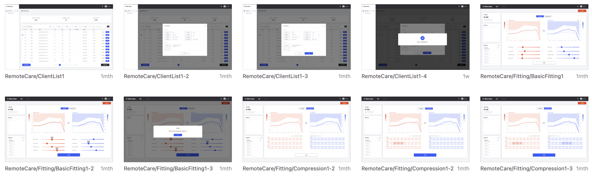

난청 전문가가 화상 상담을 하며 환자의 보청기 설정을 실시간으로 원격 조정할 수 있는 B2B/B2C 통합 웹 서비스, Olive Remote Care를 기획하고 디자인했습니다.
보청기 설정을 조정하려면 환자가 매번 전문가를 직접 방문해야 했습니다. 원거리 거주자나 거동이 불편한 환자에게는 이 방문 자체가 큰 장벽이었고, 전문가 입장에서도 대면 상담만으로는 응대할 수 있는 환자 수가 제한적이었습니다. 기기 원격제어 서비스에 관련된 자료를 수집하고, 전문가들에게 조언을 구해 Task별로 흐름을 기획하고 Wireframe을 작업했습니다.

만약:
그러면:
방문 없이도 대면 상담과 동일한 수준의 조정 서비스를 제공할 수 있을 것이다
User research · Task flows
Wireframing · Visual/UI design · Prototyping
Usability testing · Data visualization · Illustration/Iconography
6년 경력의 청능사를 대상으로 실제 피팅 서비스 이용 경험과 원격 조정 시 필요한 기능을 인터뷰했습니다.
dB 그래프보다 Hz 그래프를 우선적으로 사용하고, 큰 소리·중간 소리·작은 소리 그룹 단위로 조정하는 경우가 많았다
히스토리(이전 조정 기록) 영역이 실제로는 생각보다 자주 쓰이는 기능이었다
재피팅은 한 달~1년 주기로 동일 고객이 반복 방문하는 경우가 대부분이었다
주 기능만 활용해 1차로 디자인을 작업하고, 프로토타입을 위해 개발자와 협업을 진행했습니다.

좌/우 귀 청력 검사 데이터를 그래프로 표시하고, 전문가가 값을 직접 조정하면 결과가 즉시 반영되도록 설계했습니다.
그래프·조정 화면과 화상 통화 화면을 한 레이아웃에 배치해, 상담과 조정이 끊기지 않게 했습니다.

Graph·Preset·Status 등 반복적으로 쓰이는 컴포넌트를 상태(active/disabled)별로 정리해, 여러 화면에서 일관되게 재사용할 수 있도록 시스템화했습니다.
서비스를 실제 원격 피팅에 운영하며 청능사들로부터 받은 현장 피드백을 바탕으로 2차 UI 개선을 진행했습니다.
화상 상담 중 조정값을 실수로 잘못 적용할 위험이 있어, 적용 확인 → 반영 중 → 완료까지 단계별 상태를 명확히 보여주는 플로우를 추가했습니다.
재피팅 시 이전 조정값을 참고하는 경우가 많아, 고객별 피팅 히스토리를 상세 패널로 분리해 상담 중에도 바로 확인할 수 있게 했습니다.
신규 고객 등록·정보 수정을 상담 화면 이탈 없이 처리할 수 있도록 고객 목록에 등록/수정 모달을 추가했습니다.
